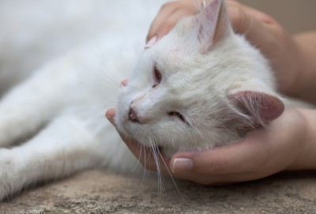

You'll need to first check if it safe to help the animal:
Be cautious when approaching unknown dogs, as you never know how they’ll react to a strange person. Always take it slowly. Dog bites can be very serious so put your own safety first.
If the dog is friendly, approachable and seems healthy, try and get them to a local dog warden, rescue centre or vet. They can then be scanned for a microchip, which you won't be charged for. It’s the law that all dogs must be microchipped so this is the best way of reuniting them with their owner. If the dog isn’t microchipped or you can’t catch it, posting photos on local social media groups or lost and found pet sites can also help to reunite a lost dog with its family.
If the dog is aggressive in any way, then keep your distance. Call the local dog warden and give them as much information as possible.
Be cautious when approaching the dog. If a dog is in a lot of pain and frightened they might act aggressively towards you. In this case, don’t attempt to move the dog on your own and get professional help. This may be an RSPCA inspector or dog warden, vet or vet nurse that are able to come out to the scene. If the dog is not showing signs of aggression and is calm with your approach, transporting the dog by wrapping it in a blanket or towel will help. This will be a first step in offering first aid and by keeping the dog warm to prevent shock, the blanket will be more comfortable for the dog and then you can then take them to your nearest vet. All vets will provide life-saving care in an emergency.
Cats are wanderers and they often choose to roam quite far away from home. Many cats that wander and seem to be strays may actually have a loving family. They can also be very cheeky at begging for extra meals off well-meaning neighbours. Even if they seem hungry you may actually be providing them with a second (or third) dinner!
It’s important to be absolutely sure that a cat is stray before taking it to a rehoming centre, or deciding to take it in yourself. If the cat appears to be healthy and well-groomed, try putting a paper collar on it with your phone number on asking the owner to contact you.
Speak to neighbours and put up ‘found’ posters in your local area. There may well be someone frantically searching for their much-loved pet. Local social media groups can also be a great way of reuniting found pets with their owners. Ring local vets too – many keep lost and found lists for their areas. If they are definitely a stray and it is safe for you to transport the cat, then you can take them to your local veterinary centre to be scanned for a microchip. This service is always free of charge and you will be able to check whether they have an owner.
If the cat won’t come anywhere near humans, it might be feral. This means it’s grown up outdoors and isn’t used to humans. If it seems to be healthy then it’s best to leave it alone. You can pass details about the cat to the Cats Protection or a local cat rescue who may be able to trap, neuter and release the cat. This stops the cat from having kittens and prevents more cats from growing up without a safe, loving home.
If the cat is injured or unwell, try and get it to the nearest vet if it is safe to do so. Be careful because cats who are in pain or are frightened may scratch or bite. All vets will provide life-saving care in an emergency. Use a blanket before picking them up, to protect you from sharp claws. Try and locate a pet carrier, or even a box with plenty of air holes so they can safely travel to the vet.
Wild animals can be very unpredictable if approached by humans. It’s best to call in the experts for advice rather than attempt to capture it, especially if it is injured or a large animal.
Often there are small local wildlife charities in each area which should be able to provide advice.